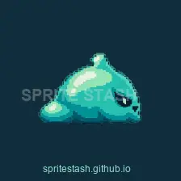
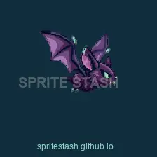
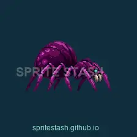
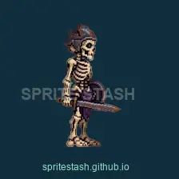
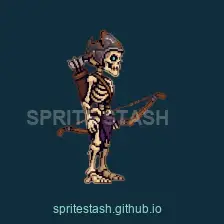
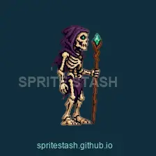
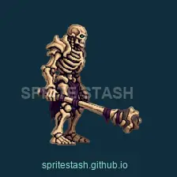
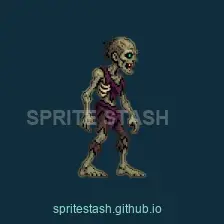
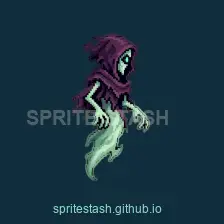

Idle
Slime
Mint ectoplasm with a spectral eye.
Sprite Stash / Dark Fantasy Bestiary
Nine animated enemies for side-scrolling fantasy worlds. Crypt creatures, skeletal combatants and a Bone Guardian boss begin a growing bestiary.
See them in motion
A silent presentation composed from the final sprite frames. Graphic backgrounds are for presentation.
The complete roster
Explore idle, movement and attack previews. Each monster also includes hurt and death animations in the pack.
Showing Idle. Previews repeat for inspection.

Idle
Mint ectoplasm with a spectral eye.

HoverIdle
A winged crypt creature with a sharp silhouette.

Idle
A purple arachnid with articulated legs.

Idle
A skeletal fighter equipped for close combat.

Idle
A bow-wielding skeleton with a ranged attack.

Idle
A hooded caster with hand-charge and projectile effects.

Idle
An imposing boss armed with a heavy bone mace.

Idle
A decayed humanoid with a two-handed attack.

Idle
A hooded spirit with spectral claws and a tapered tail.
Reduced previews carry the studio signature. Display sizes are adjusted for readability; previews repeat for inspection.
Inside Pack 01
Every character includes idle or hover, character-specific movement, attack, hurt and death.
One collection. More creatures.
Goblins, demons and more fantasy creatures are planned for future releases, following the same visual direction. Pack 01 contains the nine characters shown above.
Follow the release
Store listings are being prepared. Follow Sprite Stash for release news, new creatures and animation previews.
Source character artwork and animations were created with generative tools, including OpenAI image generation and AutoSprite. Production includes manual repairs, frame selection and reordering, timing adjustments, transparency handling, spell-effect integration and Unity playback checks.